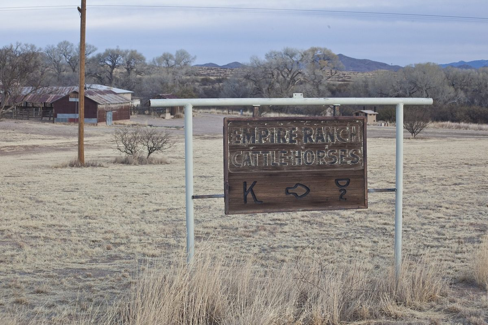

🐂Empire Ranch
Built about 1871 and still a working cattle ranch, out in rolling grassland. In 2017 a wildfire came within about 50 feet of the buildings and they survived. The half-mile Heritage Discovery Trail loops through it.
Grounds open sunrise to sunset, free. The contact center opens most weekends. The turn is off AZ 83 between mileposts 39 and 40.